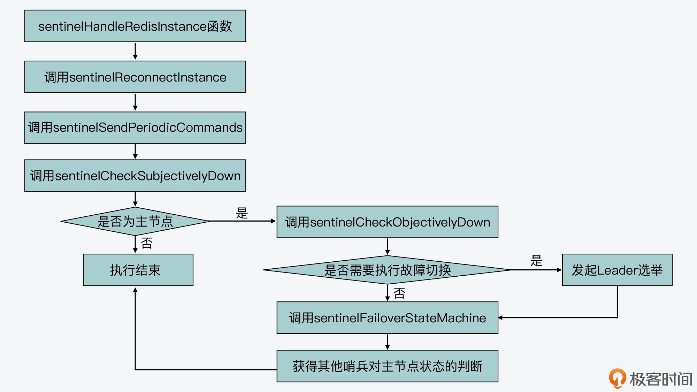

- 00 开篇词 阅读Redis源码能给你带来什么？.md.html
- 01 带你快速攻略Redis源码的整体架构.md.html
- 02 键值对中字符串的实现，用char还是结构体？.md.html
- 03 如何实现一个性能优异的Hash表？.md.html
- 04 内存友好的数据结构该如何细化设计？.md.html
- 05 有序集合为何能同时支持点查询和范围查询？.md.html
- 06 从ziplist到quicklist，再到listpack的启发.md.html
- 07 为什么Stream使用了Radix Tree？.md.html
- 08 Redis server启动后会做哪些操作？.md.html
- 09 Redis事件驱动框架（上）：何时使用select、poll、epoll？.md.html
- 10 Redis事件驱动框架（中）：Redis实现了Reactor模型吗？.md.html
- 11 Redis事件驱动框架（下）：Redis有哪些事件？.md.html
- 12 Redis真的是单线程吗？.md.html
- 13 Redis 6.0多IO线程的效率提高了吗？.md.html
- 14 从代码实现看分布式锁的原子性保证.md.html
- 15 为什么LRU算法原理和代码实现不一样？.md.html
- 16 LFU算法和其他算法相比有优势吗？.md.html
- 17 Lazy Free会影响缓存替换吗？.md.html
- 18 如何生成和解读RDB文件？.md.html
- 19 AOF重写（上）：触发时机与重写的影响.md.html
- 20 AOF重写（下）：重写时的新写操作记录在哪里？.md.html
- 21 主从复制：基于状态机的设计与实现.md.html
- 22 哨兵也和Redis实例一样初始化吗？.md.html
- 23 从哨兵Leader选举学习Raft协议实现（上）.md.html
- 24 从哨兵Leader选举学习Raft协议实现（下）.md.html
- 25 PubSub在主从故障切换时是如何发挥作用的？.md.html
- 26 从Ping-Pong消息学习Gossip协议的实现.md.html
- 27 从MOVED、ASK看集群节点如何处理命令？.md.html
- 28 Redis Cluster数据迁移会阻塞吗？.md.html
- 29 如何正确实现循环缓冲区？.md.html
- 30 如何在系统中实现延迟监控？.md.html
- 31 从Module的实现学习动态扩展功能.md.html
- 32 如何在一个系统中实现单元测试？.md.html
- 结束语 Redis源码阅读，让我们从新开始.md.html
- 捐赠
23 从哨兵Leader选举学习Raft协议实现（上）
在上节课，我们了解了哨兵实例的初始化过程。哨兵实例一旦运行后，会周期性地检查它所监测的主节点的运行状态。当发现主节点出现客观下线时，哨兵实例就要开始执行故障切换流程了。
不过，我们在部署哨兵实例时，通常会部署多个哨兵来进行共同决策，这样就避免了单个哨兵对主节点状态的误判。但是这同时也给我们带来了一个问题，即当有多个哨兵判断出主节点故障后，究竟由谁来执行故障切换？
实际上，这就和哨兵 Leader 选举有关了。而哨兵 Leader 选举，又涉及到分布式系统中经典的共识协议：Raft 协议。学习和掌握 Raft 协议的实现，对于我们在分布式系统开发中实现分布式共识有着非常重要的指导作用。
所以接下来的两节课，我会带你了解 Raft 协议以及 Redis 源码中，基于 Raft 协议实现 Leader 选举的具体设计思路。今天我们先来学习下 Raft 协议的基本流程、它和哨兵 Leader 选举的关系，以及哨兵工作的整体执行流程，这部分内容也是我们学习哨兵 Leader 选举的必备知识。
哨兵 Leader 选举和 Raft 协议
当哨兵发现主节点有故障时，它们就会选举一个 Leader 出来，由这个 Leader 负责执行具体的故障切换流程。但因为哨兵本身会有多个实例，所以，在选举 Leader 的过程中，就需要按照一定的协议，让多个哨兵就“Leader 是哪个实例”达成一致的意见，这也就是分布式共识。
而 Raft 协议可以用来实现分布式共识，这是一种在分布式系统中实现多节点达成一致性的算法，可以用来在多个节点中选举出 Leader 节点。为了实现这一目标，Raft 协议把节点设计成了三种类型，分别是 Leader、Follower 和 Candidate。
Raft 协议对于 Leader 节点和 Follower 节点之间的交互有两种规定：
- 正常情况下，在一个稳定的系统中，只有 Leader 和 Follower 两种节点，并且 Leader 会向 Follower 发送心跳消息。
- 异常情况下，如果 Follower 节点在一段时间内没有收到来自 Leader 节点的心跳消息，那么，这个 Follower 节点就会转变为 Candidate 节点，并且开始竞选 Leader。
然后，当一个 Candidate 节点开始竞选 Leader 时，它会执行如下操作：
- 给自己投一票；
- 向其他节点发送投票请求，并等待其他节点的回复；
- 启动一个计时器，用来判断竞选过程是否超时。
在这个 Candidate 节点等待其他节点返回投票结果的过程中，如果它收到了 Leader 节点的心跳消息，这就表明，此时已经有 Leader 节点被选举出来了。那么，这个 Candidate 节点就会转换为 Follower 节点，而它自己发起的这轮竞选 Leader 投票过程就结束了。
而如果这个 Candidate 节点，收到了超过半数的其他 Follower 节点返回的投票确认消息，也就是说，有超过半数的 Follower 节点都同意这个 Candidate 节点作为 Leader 节点，那么这个 Candidate 节点就会转换为 Leader 节点，从而可以执行 Leader 节点需要运行的流程逻辑。
这里，你需要注意的是，每个 Candidate 节点发起投票时，都会记录当前的投票轮次，Follower 节点在投票过程中，每一轮次只能把票投给一个 Candidate 节点。而一旦 Follower 节点投过票了，它就不能再投票了。如果在一轮投票中，没能选出 Leader 节点，比如有多个 Candidate 节点获得了相同票数，那么 Raft 协议会让 Candidate 节点进入下一轮，再次开始投票。
好了，现在你就了解了 Raft 协议中 Leader 选举的基本过程和原则。不过你还要清楚一点，就是 Redis 哨兵在实现时，并没有完全按照 Raft 协议来实现，这主要体现在，Redis 哨兵实例在正常运行的过程中，不同实例间并不是 Leader 和 Follower 的关系，而是对等的关系。只有当哨兵发现主节点有故障了，此时哨兵才会按照 Raft 协议执行选举 Leader 的流程。
接下来，我们就从代码层面来看下，哨兵是如何执行 Raft 协议来选举 Leader 的。
哨兵的时间事件处理函数 sentinelTimer
我们先来看下哨兵的时间事件处理函数 sentinelTimer（在sentinel.c文件中），因为哨兵 Leader 选举是在这个函数执行过程中触发的。
sentinelTimer 函数本身是在 serverCron 函数（在 server.c 文件中）中调用的，如下所示：
int serverCron(struct aeEventLoop *eventLoop, long long id, void *clientData) {
…
if (server.sentinel_mode) sentinelTimer(); //如果当前运行的是哨兵，则运行哨兵的时间事件处理函数
…
}
serverCron 函数每 100ms 执行一次，在执行过程中，它会检查 server.sentinel_mode 配置项，如果该配置项为 1，就表明当前运行的是哨兵实例，紧接着它就会调用 sentinelTimer 函数。因此，sentinelTimer 函数也会周期性执行。我在上节课给你介绍过 server.sentinel_mode 配置项的设置，你也可以再去回顾下。
接着，sentinelTimer 会调用 sentinelHandleDictOfRedisInstances 函数。这个函数的原型如下，它的参数是一个哈希表：
void sentinelHandleDictOfRedisInstances(dict *instances)
实际上，当 sentinelTimer 调用 sentinelHandleDictOfRedisInstances 时，传入的哈希表参数，就是当前哨兵实例状态信息 sentinelState 结构中维护的 master 哈希表，其中记录了当前哨兵监听的主节点，如下所示：
void sentinelTimer(void) {
...
//将当前哨兵监听的主节点作为参数传入sentinelHandleDictOfRedisInstances函数
sentinelHandleDictOfRedisInstances(sentinel.masters);
...
}
sentinelHandleDictOfRedisInstances 函数会执行一个循环流程，在该流程中，它会从 sentinel.master 哈希表中逐一取出监听的主节点，并调用 sentinelHandleRedisInstance 函数对该主节点进行处理，如下所示：
void sentinelHandleDictOfRedisInstances(dict *instances) {
...
di = dictGetIterator(instances); //获取哈希表的迭代器
while((de = dictNext(di)) != NULL) {
//从哈希表中取出一个实例
sentinelRedisInstance *ri = dictGetVal(de);
//调用sentinelHandleRedisInstance处理实例
sentinelHandleRedisInstance(ri);
...
}
...
}
注意，这里的 sentinelHandleRedisInstance 函数是哨兵工作机制中的一个重要函数，它实现了哨兵实例工作的主体逻辑。下面我们就先来了解下它的主要执行步骤，然后我们再分别学习其中关键步骤的实现细节。
sentinelHandleRedisInstance 函数的执行流程
首先你要知道，sentinelHandleRedisInstance 函数会被周期性执行，用来检测哨兵监听的节点的状态。这个函数主要会依次执行以下四个步骤。
第一步：重建连接
sentinelHandleRedisInstance 会调用 sentinelReconnectInstance 函数，尝试和断连的实例重新建立连接。
第二步：发送命令
sentinelHandleRedisInstance 会调用 sentinelSendPeriodicCommands 函数，向实例发送 PING、INFO 等命令。
第三步：判断主观下线
sentinelHandleRedisInstance 会调用 sentinelCheckSubjectivelyDown 函数，检查监听的实例是否主观下线。
第四步：判断客观下线和执行故障切换
在这一步中，sentinelHandleRedisInstance 函数的运行逻辑主要是针对被监听的主节点来执行的，而这一步又可以分成以下四个小步骤：
- 首先，针对监听的主节点，调用 sentinelCheckObjectivelyDown 函数检查其是否客观下线。
- 紧接着，调用 sentinelStartFailoverIfNeeded 函数判断是否要启动故障切换。如果要启动故障切换，就调用 sentinelAskMasterStateToOtherSentinels 函数，获取其他哨兵实例对主节点状态的判断，并向其他哨兵发送 is-master-down-by-addr 命令，发起 Leader 选举。
- 然后，调用 sentinelFailoverStateMachine 执行故障切换。
- 最后，再次调用 sentinelAskMasterStateToOtherSentinels 函数，获取其他哨兵实例对主节点状态的判断。
这里你需要注意下，因为 sentinelHandleRedisInstance 函数处理的对象是 sentinelRedisInstance 结构的实例，而 sentinelRedisInstance 结构可以表示主节点、从节点以及哨兵实例。在刚才介绍的四个大步骤中，第一、二和三步会对主节点、从节点和哨兵实例都执行，而第四步只有在当前 sentinelRedisInstance 表示主节点时，才会执行。
下图也展示了 sentinelHandleRedisInstance 函数执行的基本逻辑。

现在，我们就了解了 sentinelHandleRedisInstance 函数的基本执行过程。
另外，就像刚才给你介绍的，因为 sentinelHandleDictOfRedisInstances 函数接收的参数，是当前哨兵监听的主节点哈希表，而每个主节点又会记录同时监听它的其他哨兵实例以及它的从节点，这分别对应了主节点数据结构 sentinelRedisInstance 中的 sentinels 和 slaves 成员变量，这两个变量本身也是用哈希表来保存其他哨兵和从节点信息的，如下所示：
typedef struct sentinelRedisInstance {
...
dict *sentinels; //监听同一个主节点的其他哨兵实例
dict *slaves; //当前主节点的从节点
...
}
所以，哨兵在 sentinelHandleDictOfRedisInstances 函数中，调用 sentinelHandleRedisInstance 处理完每个主节点后，还会针对监听主节点的其他哨兵实例，以及主节点的从节点，分别调用 sentinelHandleDictOfRedisInstances 函数进行处理，如下所示：
//如果当前是主节点，那么调用sentinelHandleDictOfRedisInstances分别处理该主节点的从节点，以及监听该主节点的其他哨兵
//如果当前是主节点，那么调用sentinelHandleDictOfRedisInstances分别处理该主节点的从节点，以及监听该主节点的其他哨兵
if (ri->flags & SRI_MASTER) {
sentinelHandleDictOfRedisInstances(ri->slaves);
sentinelHandleDictOfRedisInstances(ri->sentinels);
...
}
也就是说，sentinelTimer 周期性执行的一个重要任务，就是 sentinelHandleDictOfRedisInstances 函数。
那么，sentinelTimer 除了调用 sentinelHandleDictOfRedisInstances 以外，它一开始还会调用 sentinelCheckTiltCondition 函数检查是否需要进入 TILT 模式。这里，你需要注意下，对于哨兵来说，TILT 模式是一种特殊的运行模式，当哨兵连续两次的时间事件处理间隔时长为负值，或是间隔时长过长，那么哨兵就会进入 TILT 模式。在该模式下，哨兵只会定期发送命令收集信息，而不会执行故障切换流程。
此外，sentinelTimer 函数在调用执行完 sentinelHandleDictOfRedisInstances 函数后，还会依次调用 sentinelRunPendingScripts、sentinelCollectTerminatedScripts 和 sentinelKillTimedoutScripts 这三个函数，来运行待执行的脚本、收集结束的脚本以及将超时的脚本 kill 掉。
最后，sentinelTimer 函数会调整 server.hz 配置项，它会在 server.hz 默认值的基础上增加一个随机值，而这个配置项决定了 sentinelTimer 本身的执行频率。因此在调整后，sentinelTimer 函数就会按照修改后的运行频率再次执行。
下面的代码展示了 sentinelTimer 函数的整体执行流程，你可以再回顾下。
void sentinelTimer(void) {
sentinelCheckTiltCondition();
sentinelHandleDictOfRedisInstances(sentinel.masters);
sentinelRunPendingScripts();
sentinelCollectTerminatedScripts();
sentinelKillTimedoutScripts();
server.hz = CONFIG_DEFAULT_HZ + rand() % CONFIG_DEFAULT_HZ;
}
好了，到这里，我们就了解了哨兵实例的时间事件处理函数 sentinelTimer。在该函数的执行流程中，你需要重点关注的是 sentinelHandleRedisInstance 函数，这是哨兵周期性检测主节点下线状态和执行故障切换的主要函数。并且一旦需要执行故障切换，哨兵的 Leader 选举也会发生在这里。所以接下来，我们就来具体学习下 sentinelHandleRedisInstance 函数的实现。
sentinelHandleRedisInstance 函数的内部实现
通过前面针对 sentinelHandleRedisInstance 函数执行流程的介绍，现在我们知道，该函数首先会依次调用 sentinelReconnectInstance、sentinelSendPeriodicCommand 和 sentinelCheckSubjectiveDown 这三个函数。所以这里，我们先来看下这三个函数的实现和主要作用。然后在下节课，我会给你详细介绍 sentinelHandleRedisInstance 中其他函数的实现，以此帮助你全面掌握哨兵工作过程中的关键操作。
sentinelReconnectInstance 函数
sentinelReconnectInstance 函数的主要作用是判断哨兵实例和主节点间连接是否正常，如果发生了断连情况，它会重新建立哨兵和主节点的连接。
其实，哨兵在使用 sentinelRedisInstance 结构保存主节点信息时，在该结构中有一个 instanceLink 类型的成员变量 link，该变量就记录了哨兵和主节点间的两个连接，分别对应用来发送命令的连接 cc 和用来发送 Pub/Sub 消息的连接 pc，如下所示：
typedef struct instanceLink {
...
redisAsyncContext *cc; //用于发送命令的连接
redisAsyncContext *pc; //用于发送pub-sub消息的连接
...
}
sentinelReconnectInstance 函数执行时会检查这两个连接是否为 NULL。如果是的话，那么它就会调用 redisAsyncConnectBind 函数（在async.c文件中），重新和主节点建立这两个连接。
这是因为，哨兵在监听主节点状态过程中，正是要通过命令连接 cc 向主节点发送命令，而通过 Pub/Sub 连接 pc，订阅主节点的 Hello 频道，从而就可以通过这个频道再发现监听同一主节点的其他哨兵实例。
这样，在完成了和主节点的连接重建后，哨兵会继续调用 sentinelSendPeriodicCommands 函数。
sentinelSendPeriodicCommands 函数
sentinelSendPeriodicCommands 的逻辑比较简单，它先是调用 redisAsyncCommand 函数（在 async.c 文件中），通过哨兵和主节点间的命令连接 cc，向主节点发送 INFO 命令。然后，再通过 sentinelSendPing 函数（在 sentinel.c 文件中）向主节点发送 PING 命令（PING 命令的发送也是通过哨兵和主节点的命令连接 cc 来完成的）。
最后，sentinelSendPeriodicCommands 函数会调用 sentinelSendHello 函数（在 sentinel.c 文件中），通过哨兵和主节点的命令连接 cc，向主节点发送 PUBLISH 命令，将哨兵自身的 IP、端口号和 ID 号信息发送给主节点。
接下来，哨兵就会调用 sentinelCheckSubjectivelyDown 函数，来判断监听的主节点是否主观下线。
sentinelCheckSubjectivelyDown 函数
sentinelCheckSubjectivelyDown 函数首先会计算当前距离上次哨兵发送 PING 命令的时长 elapsed，如下所示：
void sentinelCheckSubjectivelyDown(sentinelRedisInstance *ri) {
...
if (ri->link->act_ping_time) //计算当前距离上一次发送PING命令的时长
elapsed = mstime() - ri->link->act_ping_time;
else if (ri->link->disconnected) //如果哨兵和主节点的连接断开了，那么计算当前距离连接最后可用的时长
elapsed = mstime() - ri->link->last_avail_time;
...
}
计算完 elapsed 之后，sentinelCheckSubjectivelyDown 函数会分别检测哨兵和主节点的命令发送连接，以及 Pub/Sub 连接的活跃程度。如果活跃度不够，那么哨兵会调用 instanceLinkCloseConnection 函数（在 sentinel.c 文件中），断开当前连接，以便重新连接。
紧接着，sentinelCheckSubjectivelyDown 函数会根据以下两个条件，判断主节点是否为主观下线。
- 条件一：当前距离上次发送 PING 的时长已经超过 down_after_period 阈值，还没有收到回复。down_after_period 的值是由 sentinel.conf 配置文件中，down-after-milliseconds 配置项决定的，其默认值是 30s。
- 条件二：哨兵认为当前实例是主节点，但是这个节点向哨兵报告它将成为从节点，并且在 down_after_period 时长，再加上两个 INFO 命令间隔后，该节点还是没有转换成功。
当上面这两个条件有一个满足时，哨兵就判定主节点为主观下线了。然后，哨兵就会调用 sentinelEvent 函数发送“+sdown”事件信息。下面的代码展示了这部分的判断逻辑，你可以看下。
if (elapsed > ri->down_after_period ||
(ri->flags & SRI_MASTER && ri->role_reported == SRI_SLAVE
&& mstime() - ri->role_reported_time > (ri->down_after_period+SENTINEL_INFO_PERIOD*2)))
{
//判断主节点为主观下线
if ((ri->flags & SRI_S_DOWN) == 0) {
sentinelEvent(LL_WARNING,"+sdown",ri,"%@");
ri->s_down_since_time = mstime();
ri->flags |= SRI_S_DOWN;
}
}
好了，到这里，我们就先了解了 sentinelHandleRedisInstance 函数执行流程中的前三个关键操作。它们会分别用于重建哨兵和监控主节点的连接，向主节点发送检测命令，以及判断主节点主观下线状态。这三步也是哨兵每次执行周期性任务的必备操作。
小结
这节课，我主要是给你介绍了哨兵工作过程中的一个重要环节，也就是哨兵 Leader 的选举。这个选举过程是参考了分布式系统中常用的分布式共识协议 Raft 协议来实现的。所以，你需要先了解 Raft 协议的基本流程，包括 Leader、Follower、Candidate 三种节点类型，Follower 成为 Candidate 的条件和具体操作，以及 Leader 投票的规则。
那么，对于哨兵 Leader 选举来说，它参考了 Raft 协议，但你需要注意的是，哨兵在正常运行时并不像 Raft 协议那样区分了三种节点类型，而是所有哨兵都是对等的。而当哨兵发现主节点故障，要执行故障切换时，会按照 Raft 协议中 Leader 选举的规则，进行投票选出 Leader。这是哨兵 Leader 选举和 Raft 协议的区别与联系。
此外，我还介绍了哨兵的时间事件处理函数 sentinelTimer，这个函数会对哨兵监听的每个主节点，周期性调用 sentinelHandleRedisInstance 函数，来检查主节点在线状态。当主节点客观下线了，哨兵会启动 Leader 选举并执行故障切换。这节课我们是先了解了 sentinelHandleRedisInstance 函数的整体执行流程，这样，你也能掌握哨兵的整体工作过程。同时，针对哨兵和主节点重建连接、发送命令和检查主观下线的三个函数，你也要有所了解，它们也是哨兵工作中的三个重要步骤。
那么，在下节课，我将带你了解哨兵 Leader 选举的具体过程以及故障切换的执行。
每课一问
哨兵实例执行的周期性函数 sentinelTimer，它在函数执行逻辑的最后，会修改 server.hz 配置项，如下所示：
void sentinelTimer(void) {
...
server.hz = CONFIG_DEFAULT_HZ + rand() % CONFIG_DEFAULT_HZ;
}
你知道调整 server.hz 的目的是什么吗？欢迎在留言区分享你的答案和思考，也欢迎你把今天的内容分享给更多的朋友。
© 2019 - 2023 Liangliang Lee. Powered by gin and hexo-theme-book.